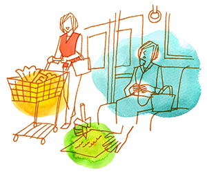

広場恐怖3
いきいきと生きる 〜神経質を受け入れて〜
（パニック発作、広場恐怖、双極性障害Ⅱ型）
西本 なお（仮名）30代・主婦（体験フォーラム会員）
心身への執着
私が岡本記念財団の体験フォーラムに出会ったのは、結婚し夫の転職を機に夫の実家のある田舎に引っ越してきてからです。
もともと、大学時代に身内の不幸のショックで不眠になり、その後就職しても心身ともについていけず、うつ状態と診断されて仕事を辞めてからは、常に自分の心や身体の状態にばかり執着していました。社会に出ようとしても「病気だから。」という劣等感が強く、バイトをしては自分が周囲にとって期待に応えられないだめな人間なのでは、と勝手に気に病み、辞めることを繰り返していました。趣味でバンドをやったりと、今思うとやりたいことや楽しいことがたくさんやれる環境にいたにも関わらず、「今の不健康な私は本来の自分じゃないし、ベストじゃない。」という思いに取りつかれ、出かけた先々で体調を壊したらどうしようとか、無理してはいけないと思ってばかりでいろいろなことを全く楽しめませんでした。不安感やイライラ感を異常なことと思い、人間関係が上手くいかないことなども全てが病気のように感じ、医師に訴え、医師からは「あなたの症状は診断するのが難しいです。おそらく双極性障害Ⅱ型でしょう。」と言われたのが通院してから8年目のことでした。
背水の陣
結婚してから状態は次第に落ち着いていき、薬の量もだいぶ減ってきましたが電車に乗っているときにパニック発作を起こすことは続いており、美容室や外食など、一度でも発作を起こした記憶のある場所は避け、通勤のために電車に乗るときはポケットに薬をしのばせ、途中下車しても仕事に遅れないようにと2時間も早めに家を出ていました。気分が悪くなったら休める場所はチェックし、飲み物やガムは常備、イヤホンでリラックスできる音楽を聴いていつも腹式呼吸をしながら通勤をしていました。
夫の転職を機に田舎に越してきてからは、慣れない家族や親戚、地域の人との付き合いはとても緊張することだったので、いい格好をみせたい私としては疲れてしまうことばかりでした。そんな生活のなか、ある時服用している薬が減ったと同時に、パニック発作や身体の違和感、不安感が急にひどくなってしまいました。人前で具合が悪くなることが極端に怖い私はすぐに病院に行こうとしましたが、電車も数時間に1本です。途中下車は簡単にはできません。でも、これからの妊娠を望む自分としては、簡単に薬を増やすのももう嫌なのです。もしかしたら、もう、もうこの不安からは逃れられないのかもしれない…。まさに背水の陣の心境でした。なんとかできないのか？ネットで探っているうちに森田療法を知り、こちらの体験フォーラムを知ったときには迷わずに入会しました。
体験フォーラムでの気づき
入会し、体験フォーラムの管理人さんに日記を勧められた時は、正直本当に意味あるの？と思っていました。でも、もう背水の陣の心境なので、やるしかありません。本当は如何に自分は苦しい思いをしているのかを知ってもらって、励ましてもらいたかったのだと思います。まさに神経質者の利己主義です。自分だけがしんどいと思っているのです。だから、日記も事実のみ書こうとしながらもずっと愚痴ばかりでした（笑）。ただ、勧められるままに森田先生の神経質講義を聴いたときに、「数年来抱えていた悩み、苦しさはこれだったのか！」と衝撃を受けました。そしてフォーラムや森田先生の本で神経症患者の方々の日記をよむたび「ああ、自分は一人ではなかったのだなぁ。」と涙が出てきました。

不安があるのは、その裏に欲望があるからだと学んだときも目から鱗が出る気分でした。そしてはじめて、自分にはやりたいがたくさんあることに気づいたのです。始めは一歩一歩でした。スーパーは怖い…けど、行きたい、行こう。そして、実際に行ってしまえばスーパーのなかで買い物に熱中するのです。散歩、習い事、在宅ワーク…やってしまえばなんなくこなせるのですね。フォーラムで日記を書きはじめてから内側に向いていた心がどんどん外側に向いてきて3ヶ月めに、就職失敗以来の初めてのフルタイム勤務に挑戦することができ、愚痴ばかりの日記もなんとか無事卒業できました。
ありのままの自分
そして、日々、日々、目の前のことをこなしていくうちに色々な変化がありました。緊張しながら、嫌々ながらも仕事に行ったり、家族や地域の人と触れ合うと「ベストな自分じゃなくていいんだ。そのままでいいんだ。」と気づきました。そして、欠点もありながら人と繋がっていくことの有り難さ、楽しさ、大切さを初めて知ったのです。
また、母との関係に精神的な葛藤があり、自分の子供時代の辛い経験ばかり思い出しては「自分も将来母親のようになってしまうのではないか…。」という不安から逃れられない気持ちがあったのですが、その気持ちはそのままとして生活しているうちに、ある時たくさん愛された温かい記憶が蘇ってきて、こういう気持ちもあったんだなぁと気づきました。まるで固まっていた感情が溶けて流れ出たような経験でした。
現在も不安があったり悩みがあったりしますが、それはそれとして、生きていくことが楽しい日々です。私は森田療法を通じて、やっとありのままの自分に出会えた気持ちがしています。自然なままの自分です。良くも悪くもある自分です。
ただ、このように学ぶことができたのは管理人さんをはじめとしてたくさんの先輩方がこちらのフォーラムでいろいろなことを教えてくださったからだと思います。なかなか飲み込みの悪い私でしたが、懲りずにいつも励ましてくださいました。このような方々と出会えたことにはただただ感謝です。これからも、神経質として森田先生の教えを学んでいきたいと思っております。